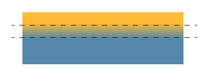
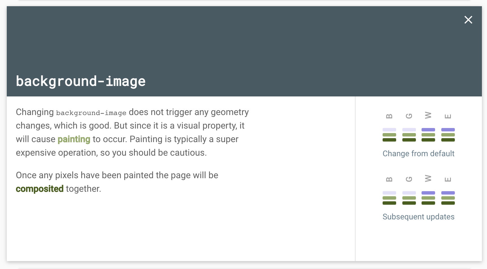

<!DOCTYPE html>
<html>
<head><meta name="generator" content="Hexo 3.8.0">
    <meta charset="utf-8">
    
    <title>CSS3 Skeleton Screen | J Dev</title>
    <meta name="viewport" content="width=device-width, initial-scale=1, maximum-scale=1">
    
        <meta name="keywords" content="css,css3">
    
    <meta name="description" content="linear-gradient로 skeleton screen 만들어보기페이스북이나 유튜브의 첫 화면을 보면, 아주 잠깐 프레임을 그려주는 빈 페이지를 확인할 수 있다.이러한 페이지를 개발에서 skeleton screen(스켈레톤 스크린) 이라고 한다.참고로 skeleton은 뼈대를 의미의 단어를 뜻한다. skeleton screen을 적용하면 사용자가 “대기">
<meta name="keywords" content="css,css3">
<meta property="og:type" content="article">
<meta property="og:title" content="CSS3 Skeleton Screen">
<meta property="og:url" content="http://woonyzzang.github.com/2018/11/24/css3-skeleton-screen/index.html">
<meta property="og:site_name" content="J Dev">
<meta property="og:description" content="linear-gradient로 skeleton screen 만들어보기페이스북이나 유튜브의 첫 화면을 보면, 아주 잠깐 프레임을 그려주는 빈 페이지를 확인할 수 있다.이러한 페이지를 개발에서 skeleton screen(스켈레톤 스크린) 이라고 한다.참고로 skeleton은 뼈대를 의미의 단어를 뜻한다. skeleton screen을 적용하면 사용자가 “대기">
<meta property="og:locale" content="en">
<meta property="og:image" content="http://woonyzzang.github.com/2018/11/24/css3-skeleton-screen/css3-skeleton-screen1.png">
<meta property="og:updated_time" content="2019-08-09T02:03:45.143Z">
<meta name="twitter:card" content="summary">
<meta name="twitter:title" content="CSS3 Skeleton Screen">
<meta name="twitter:description" content="linear-gradient로 skeleton screen 만들어보기페이스북이나 유튜브의 첫 화면을 보면, 아주 잠깐 프레임을 그려주는 빈 페이지를 확인할 수 있다.이러한 페이지를 개발에서 skeleton screen(스켈레톤 스크린) 이라고 한다.참고로 skeleton은 뼈대를 의미의 단어를 뜻한다. skeleton screen을 적용하면 사용자가 “대기">
<meta name="twitter:image" content="http://woonyzzang.github.com/2018/11/24/css3-skeleton-screen/css3-skeleton-screen1.png">
    
    <link rel="canonical" href="http://woonyzzang.github.com/2018/11/24/css3-skeleton-screen/">

    

    
        <link rel="icon" href="/images/favicon.png">
    

    <link rel="stylesheet" href="/libs/font-awesome/css/font-awesome.min.css">
    <link rel="stylesheet" href="/libs/titillium-web/styles.css">
    <link rel="stylesheet" href="/libs/source-code-pro/styles.css">

    <link rel="stylesheet" href="/css/style.css">

    <script src="/libs/jquery/2.0.3/jquery.min.js"></script>
    
    
        <link rel="stylesheet" href="/libs/lightgallery/css/lightgallery.min.css">
    
    
    

</head>
</html>
<body>
    <div id="wrap">
        <header id="header">
    <div id="header-outer" class="outer">
        <div class="container">
            <div class="container-inner">
                <div id="header-title">
                    <h1 class="logo-wrap">
                        <a href="/" class="logo"></a>
                    </h1>
                    
                        <h2 class="subtitle-wrap">
                            <p class="subtitle">Web Development Story Blog</p>
                        </h2>
                    
                </div>
                <div id="header-inner" class="nav-container">
                    <a id="main-nav-toggle" class="nav-icon fa fa-bars"></a>
                    <div class="nav-container-inner">
                        <ul id="main-nav">
                            
                                <li class="main-nav-list-item">
                                    <a class="main-nav-list-link" href="/">Home</a>
                                </li>
                            
                                        <ul class="main-nav-list"><li class="main-nav-list-item"><a class="main-nav-list-link" href="/categories/App/">App</a><ul class="main-nav-list-child"><li class="main-nav-list-item"><a class="main-nav-list-link" href="/categories/App/Ionic/">Ionic</a></li></ul></li><li class="main-nav-list-item"><a class="main-nav-list-link" href="/categories/Editor/">Editor</a><ul class="main-nav-list-child"><li class="main-nav-list-item"><a class="main-nav-list-link" href="/categories/Editor/SublimeText/">SublimeText</a></li><li class="main-nav-list-item"><a class="main-nav-list-link" href="/categories/Editor/Visualstudio/">Visualstudio</a></li><li class="main-nav-list-item"><a class="main-nav-list-link" href="/categories/Editor/Webstorm/">Webstorm</a></li></ul></li><li class="main-nav-list-item"><a class="main-nav-list-link" href="/categories/Etc/">Etc</a><ul class="main-nav-list-child"><li class="main-nav-list-item"><a class="main-nav-list-link" href="/categories/Etc/Log/">Log</a></li></ul></li><li class="main-nav-list-item"><a class="main-nav-list-link" href="/categories/FrontEnd/">FrontEnd</a><ul class="main-nav-list-child"><li class="main-nav-list-item"><a class="main-nav-list-link" href="/categories/FrontEnd/Angular-js/">Angular.js</a></li><li class="main-nav-list-item"><a class="main-nav-list-link" href="/categories/FrontEnd/Backbone-js/">Backbone.js</a></li><li class="main-nav-list-item"><a class="main-nav-list-link" href="/categories/FrontEnd/D3-js/">D3.js</a></li><li class="main-nav-list-item"><a class="main-nav-list-link" href="/categories/FrontEnd/Javascript-js/">Javascript.js</a></li><li class="main-nav-list-item"><a class="main-nav-list-link" href="/categories/FrontEnd/Node-js/">Node.js</a></li><li class="main-nav-list-item"><a class="main-nav-list-link" href="/categories/FrontEnd/React-js/">React.js</a></li><li class="main-nav-list-item"><a class="main-nav-list-link" href="/categories/FrontEnd/Require-js/">Require.js</a></li><li class="main-nav-list-item"><a class="main-nav-list-link" href="/categories/FrontEnd/Webpack/">Webpack</a></li><li class="main-nav-list-item"><a class="main-nav-list-link" href="/categories/FrontEnd/jQuery/">jQuery</a></li></ul></li><li class="main-nav-list-item"><a class="main-nav-list-link" href="/categories/OS/">OS</a><ul class="main-nav-list-child"><li class="main-nav-list-item"><a class="main-nav-list-link" href="/categories/OS/CentOS/">CentOS</a></li><li class="main-nav-list-item"><a class="main-nav-list-link" href="/categories/OS/Mac/">Mac</a></li><li class="main-nav-list-item"><a class="main-nav-list-link" href="/categories/OS/Ubuntu/">Ubuntu</a></li><li class="main-nav-list-item"><a class="main-nav-list-link" href="/categories/OS/Windows/">Windows</a></li></ul></li><li class="main-nav-list-item"><a class="main-nav-list-link" href="/categories/Server/">Server</a><ul class="main-nav-list-child"><li class="main-nav-list-item"><a class="main-nav-list-link" href="/categories/Server/ASP/">ASP</a></li><li class="main-nav-list-item"><a class="main-nav-list-link" href="/categories/Server/AWS/">AWS</a></li><li class="main-nav-list-item"><a class="main-nav-list-link" href="/categories/Server/Docker/">Docker</a></li><li class="main-nav-list-item"><a class="main-nav-list-link" href="/categories/Server/Gitlab/">Gitlab</a></li></ul></li><li class="main-nav-list-item"><a class="main-nav-list-link" href="/categories/Tools/">Tools</a><ul class="main-nav-list-child"><li class="main-nav-list-item"><a class="main-nav-list-link" href="/categories/Tools/APMSETUP/">APMSETUP</a></li><li class="main-nav-list-item"><a class="main-nav-list-link" href="/categories/Tools/Fiddler/">Fiddler</a></li><li class="main-nav-list-item"><a class="main-nav-list-link" href="/categories/Tools/OpenSSl/">OpenSSl</a></li></ul></li><li class="main-nav-list-item"><a class="main-nav-list-link" href="/categories/Web/">Web</a><ul class="main-nav-list-child"><li class="main-nav-list-item"><a class="main-nav-list-link" href="/categories/Web/CSS/">CSS</a></li><li class="main-nav-list-item"><a class="main-nav-list-link" href="/categories/Web/Descktop/">Descktop</a></li><li class="main-nav-list-item"><a class="main-nav-list-link" href="/categories/Web/HTML/">HTML</a></li><li class="main-nav-list-item"><a class="main-nav-list-link" href="/categories/Web/Mobile/">Mobile</a></li><li class="main-nav-list-item"><a class="main-nav-list-link" href="/categories/Web/Others/">Others</a></li></ul></li></ul>
                                    
                        </ul>
                        <nav id="sub-nav">
                            <div id="search-form-wrap">

    <form class="search-form">
        <input type="text" class="ins-search-input search-form-input" placeholder="Search">
        <button type="submit" class="search-form-submit"></button>
    </form>
    <div class="ins-search">
    <div class="ins-search-mask"></div>
    <div class="ins-search-container">
        <div class="ins-input-wrapper">
            <input type="text" class="ins-search-input" placeholder="Type something...">
            <span class="ins-close ins-selectable"><i class="fa fa-times-circle"></i></span>
        </div>
        <div class="ins-section-wrapper">
            <div class="ins-section-container"></div>
        </div>
    </div>
</div>
<script>
(function (window) {
    var INSIGHT_CONFIG = {
        TRANSLATION: {
            POSTS: 'Posts',
            PAGES: 'Pages',
            CATEGORIES: 'Categories',
            TAGS: 'Tags',
            UNTITLED: '(Untitled)',
        },
        ROOT_URL: '/',
        CONTENT_URL: '/content.json',
    };
    window.INSIGHT_CONFIG = INSIGHT_CONFIG;
})(window);
</script>
<script src="/js/insight.js"></script>

</div>
                        </nav>
                    </div>
                </div>
            </div>
        </div>
    </div>
</header>
        <div class="container">
            <div class="main-body container-inner">
                <div class="main-body-inner">
                    <section id="main">
                        <div class="main-body-header">
    <h1 class="header">
    
    <a class="page-title-link" href="/categories/Web/">Web</a><i class="icon fa fa-angle-right"></i><a class="page-title-link" href="/categories/Web/CSS/">CSS</a>
    </h1>
</div>
                        <div class="main-body-content">
                            <article id="post-css3-skeleton-screen" class="article article-single article-type-post" itemscope="" itemprop="blogPost">
    <div class="article-inner">
        
            <header class="article-header">
                
    
        <h1 class="article-title" itemprop="name">
        CSS3 Skeleton Screen
        </h1>
    

            </header>
        
        
            <div class="article-subtitle">
                <a href="/2018/11/24/css3-skeleton-screen/" class="article-date">
    <time datetime="2018-11-23T15:14:12.000Z" itemprop="datePublished">2018-11-24</time>
</a>
                
    <ul class="article-tag-list"><li class="article-tag-list-item"><a class="article-tag-list-link" href="/tags/css/">css</a></li><li class="article-tag-list-item"><a class="article-tag-list-link" href="/tags/css3/">css3</a></li></ul>

            </div>
        
        
        <div class="article-entry" itemprop="articleBody">
            <h3 id="linear-gradient로-skeleton-screen-만들어보기"><a href="#linear-gradient로-skeleton-screen-만들어보기" class="headerlink" title="linear-gradient로 skeleton screen 만들어보기"></a>linear-gradient로 skeleton screen 만들어보기</h3><p>페이스북이나 유튜브의 첫 화면을 보면, 아주 잠깐 프레임을 그려주는 빈 페이지를 확인할 수 있다.<br>이러한 페이지를 개발에서 skeleton screen(스켈레톤 스크린) 이라고 한다.<br>참고로 skeleton은 뼈대를 의미의 단어를 뜻한다. skeleton screen을 적용하면 사용자가 “대기중”이라는 느낌을 전달하면서 빠르게 로드되고 있다고 인식하게 합니다.</p>
<p>그럼 이러한 UI는 어떤 방법으로 구현할 수 있을까?<br>CSS의 linear-gradient 속성과 :empty 선택자를 활용하여 이를 구현해 보도록 하겠다.</p>
<p></p>
<p><strong> 1. linear-gradient 원리 </strong></p>
<p>linear-gradient의 기본 문법은 아래와 같다.</p>
<figure class="highlight css"><table><tr><td class="gutter"><pre><span class="line">1</span><br><span class="line">2</span><br></pre></td><td class="code"><pre><span class="line"><span class="selector-tag">linear-gradient</span>(<span class="selector-tag">angle</span>, <span class="selector-tag">color-stop1</span>, <span class="selector-tag">color-stop2</span>); <span class="comment">/* 선형 */</span></span><br><span class="line"><span class="selector-tag">radial-gradient</span>(<span class="selector-tag">shape</span> <span class="selector-tag">size</span> <span class="selector-tag">at</span> <span class="selector-tag">position</span>, <span class="selector-tag">start-color</span>, ..., <span class="selector-tag">last-color</span>); <span class="comment">/* 원형 */</span></span><br></pre></td></tr></table></figure>
<p>선형을 적용해보면, 방향과 적용 컬러를 순서대로 선언하게 된다. 방향 <code>to bottom</code>은 기본 값으로 생략이 가능하다.</p>
<figure class="highlight css"><table><tr><td class="gutter"><pre><span class="line">1</span><br></pre></td><td class="code"><pre><span class="line"><span class="selector-tag">linear-gradient</span>(<span class="selector-tag">to</span> <span class="selector-tag">bottom</span>, <span class="selector-tag">yellow</span> 20%, <span class="selector-tag">steelblue</span> 50%)</span><br></pre></td></tr></table></figure>
<p></p>
<p>보통은 부드럽게 컬러가 변할 때 많이 쓰는 속성이지만, 경계면이 매끄럽게 떨어지도록 만드는 방법도 있다.<br>첫 번째와 두 번째 위치값이 동일할 경우, 경계선이 만나면서 그라데이션 영역이 사라지므로 아래와 같이 단색 면이 된다.</p>
<figure class="highlight css"><table><tr><td class="gutter"><pre><span class="line">1</span><br></pre></td><td class="code"><pre><span class="line"><span class="selector-tag">linear-gradient</span>(<span class="selector-tag">yellow</span> 50%, <span class="selector-tag">steelblue</span> 50%)</span><br></pre></td></tr></table></figure>
<p></p>
<p>또한 두 번째 값이 첫 번째의 값보다 클 때(더 위쪽에 위치할 때) 도 브라우저는 동일하게 동작하는데,<br>두 번째 위치를 0으로 잡았다면 그 위치는 브라우저에 의해 이전 색상 정지의 위치와 같게 그 위치가 조정된다.</p>
<figure class="highlight"><table><tr><td class="gutter"><pre><span class="line">1</span><br></pre></td><td class="code"><pre><span class="line">linear-gradient(yellow 50%, steelblue 0) = linear-gradient(yellow 50%, steelblue 50%)</span><br></pre></td></tr></table></figure>
<p>두 번째 값이 투명할 경우에는? 첫 번째 색으로만 표현된다.</p>
<figure class="highlight css"><table><tr><td class="gutter"><pre><span class="line">1</span><br></pre></td><td class="code"><pre><span class="line"><span class="selector-tag">linear-gradient</span>(<span class="selector-tag">yellow</span> 50%, <span class="selector-tag">transparent</span> 0)</span><br></pre></td></tr></table></figure>
<p></p>
<p>이러한 속성을 활용하면 하나의 div에 background-image로 도형을 드로잉해 볼 수 있다.</p>
<p><strong> 2. linear-gradient를 활용한 도형 드로잉 </strong></p>
<p></p>
<p>background-image 속성은 <code>&lt;image&gt;</code> <code>&lt;position&gt;</code> <code>&lt;size&gt;</code>의 값을 주어서 컨트롤할 수 있다.</p>
<p><strong> 1) background-image : 멀티 배경 지정 </strong></p>
<p>background-image 속성은 여러 배경 이미지를 추가할 수 있다 .<br>서로 다른 배경 이미지는 쉼표로 구분되며 이미지는 서로 위에 겹쳐서 표시된다.<br>원형 1개, 사각형 4개를 그리기 위해서 5번 선언해 주었고, y축으로 반복할 수 있게 repeat-y를 주었다.</p>
<figure class="highlight css"><table><tr><td class="gutter"><pre><span class="line">1</span><br><span class="line">2</span><br><span class="line">3</span><br><span class="line">4</span><br><span class="line">5</span><br><span class="line">6</span><br><span class="line">7</span><br><span class="line">8</span><br></pre></td><td class="code"><pre><span class="line"><span class="selector-tag">background-image</span>:</span><br><span class="line">  <span class="selector-tag">radial-gradient</span>( <span class="selector-tag">circle</span> 50<span class="selector-tag">px</span> <span class="selector-tag">at</span> 50<span class="selector-tag">px</span> 50<span class="selector-tag">px</span>, <span class="selector-tag">gray</span> 99%, <span class="selector-tag">transparent</span> 0 ), <span class="comment">/* 원형 */</span></span><br><span class="line">  <span class="selector-tag">linear-gradient</span>( <span class="selector-tag">lightgray</span> 20<span class="selector-tag">px</span>, <span class="selector-tag">transparent</span> 0 ), <span class="comment">/* 사각1 */</span></span><br><span class="line">  <span class="selector-tag">linear-gradient</span>( <span class="selector-tag">lightgray</span> 20<span class="selector-tag">px</span>, <span class="selector-tag">transparent</span> 0 ), <span class="comment">/* 사각2 */</span></span><br><span class="line">  <span class="selector-tag">linear-gradient</span>( <span class="selector-tag">lightgray</span> 20<span class="selector-tag">px</span>, <span class="selector-tag">transparent</span> 0 ), <span class="comment">/* 사각3 */</span></span><br><span class="line">  <span class="selector-tag">linear-gradient</span>( <span class="selector-tag">lightgray</span> 20<span class="selector-tag">px</span>, <span class="selector-tag">transparent</span> 0 ); <span class="comment">/* 사각4 */</span></span><br><span class="line"> </span><br><span class="line"><span class="selector-tag">background-repeat</span>: <span class="selector-tag">repeat-y</span>;</span><br></pre></td></tr></table></figure>
<p>샘플) sceleton-step1</p>
<figure class="highlight html"><table><tr><td class="gutter"><pre><span class="line">1</span><br></pre></td><td class="code"><pre><span class="line"><span class="tag">&lt;<span class="name">div</span> <span class="attr">class</span>=<span class="string">"skeleton-screen"</span>&gt;</span><span class="tag">&lt;/<span class="name">div</span>&gt;</span></span><br></pre></td></tr></table></figure>
<figure class="highlight css"><table><tr><td class="gutter"><pre><span class="line">1</span><br><span class="line">2</span><br><span class="line">3</span><br><span class="line">4</span><br><span class="line">5</span><br><span class="line">6</span><br><span class="line">7</span><br><span class="line">8</span><br><span class="line">9</span><br><span class="line">10</span><br><span class="line">11</span><br><span class="line">12</span><br><span class="line">13</span><br><span class="line">14</span><br><span class="line">15</span><br><span class="line">16</span><br><span class="line">17</span><br><span class="line">18</span><br><span class="line">19</span><br><span class="line">20</span><br></pre></td><td class="code"><pre><span class="line"><span class="selector-class">.skeleton-screen</span>&#123;</span><br><span class="line">  <span class="attribute">margin</span>: auto;</span><br><span class="line">  <span class="attribute">width</span>: <span class="number">500px</span>;</span><br><span class="line">  <span class="attribute">height</span>: <span class="number">500px</span>; </span><br><span class="line">  <span class="attribute">background-image</span>:</span><br><span class="line">    <span class="built_in">radial-gradient</span>( circle 50px at 50px 50px, lightgray 100%, transparent 0 ),</span><br><span class="line">    <span class="built_in">linear-gradient</span>( lightgray 20px, transparent 0 ),</span><br><span class="line">    <span class="built_in">linear-gradient</span>( lightgray 20px, transparent 0 ),</span><br><span class="line">    <span class="built_in">linear-gradient</span>( lightgray 20px, transparent 0 ),</span><br><span class="line">    <span class="built_in">linear-gradient</span>( lightgray 20px, transparent 0 );</span><br><span class="line">  </span><br><span class="line">  <span class="attribute">background-image</span>:</span><br><span class="line">    <span class="built_in">-webkit-radial-gradient</span>( 50px 50px, circle cover, lightgray 50px, transparent 0 ),</span><br><span class="line">    <span class="built_in">-webkit-linear-gradient</span>( lightgray 20px, transparent 0 ),</span><br><span class="line">    <span class="built_in">-webkit-linear-gradient</span>( lightgray 20px, transparent 0 ),</span><br><span class="line">    <span class="built_in">-webkit-linear-gradient</span>( lightgray 20px, transparent 0 ),</span><br><span class="line">    <span class="built_in">-webkit-linear-gradient</span>( lightgray 20px, transparent 0 ); </span><br><span class="line">   </span><br><span class="line">  <span class="attribute">background-repeat</span>: repeat-y;</span><br><span class="line">&#125;</span><br></pre></td></tr></table></figure>
<p><strong> 2) background-position : 위치 지정 </strong></p>
<p>겹쳐 있는 각 도형의 위치를 x축, y축으로 재지정 해준다.</p>
<figure class="highlight css"><table><tr><td class="gutter"><pre><span class="line">1</span><br><span class="line">2</span><br><span class="line">3</span><br><span class="line">4</span><br><span class="line">5</span><br><span class="line">6</span><br></pre></td><td class="code"><pre><span class="line"><span class="selector-tag">background-position</span>: </span><br><span class="line">   0 0,         <span class="comment">/* 원형 */</span></span><br><span class="line">   120<span class="selector-tag">px</span> 0,     <span class="comment">/* 사각1 */</span></span><br><span class="line">   120<span class="selector-tag">px</span> 40<span class="selector-tag">px</span>,  <span class="comment">/* 사각2 */</span></span><br><span class="line">   120<span class="selector-tag">px</span> 80<span class="selector-tag">px</span>,  <span class="comment">/* 사각3 */</span></span><br><span class="line">   120<span class="selector-tag">px</span> 120<span class="selector-tag">px</span>; <span class="comment">/* 사각4 */</span></span><br></pre></td></tr></table></figure>
<p><strong> 3) background-size : 사이즈 지정 </strong></p>
<p>각 도형에 원하는 사이즈 width, height 값을 지정해다.</p>
<figure class="highlight css"><table><tr><td class="gutter"><pre><span class="line">1</span><br><span class="line">2</span><br><span class="line">3</span><br><span class="line">4</span><br><span class="line">5</span><br><span class="line">6</span><br></pre></td><td class="code"><pre><span class="line"><span class="selector-tag">background-size</span>:</span><br><span class="line">  100<span class="selector-tag">px</span> 200<span class="selector-tag">px</span>, <span class="comment">/* 원형 */</span></span><br><span class="line">  150<span class="selector-tag">px</span> 200<span class="selector-tag">px</span>, <span class="comment">/* 사각1 */</span></span><br><span class="line">  350<span class="selector-tag">px</span> 200<span class="selector-tag">px</span>, <span class="comment">/* 사각2 */</span></span><br><span class="line">  300<span class="selector-tag">px</span> 200<span class="selector-tag">px</span>, <span class="comment">/* 사각3 */</span></span><br><span class="line">  250<span class="selector-tag">px</span> 200<span class="selector-tag">px</span>; <span class="comment">/* 사각4 */</span></span><br></pre></td></tr></table></figure>
<p>샘플) sceleton-step2</p>
<figure class="highlight html"><table><tr><td class="gutter"><pre><span class="line">1</span><br></pre></td><td class="code"><pre><span class="line"><span class="tag">&lt;<span class="name">div</span> <span class="attr">class</span>=<span class="string">"skeleton-screen"</span>&gt;</span><span class="tag">&lt;/<span class="name">div</span>&gt;</span></span><br></pre></td></tr></table></figure>
<figure class="highlight css"><table><tr><td class="gutter"><pre><span class="line">1</span><br><span class="line">2</span><br><span class="line">3</span><br><span class="line">4</span><br><span class="line">5</span><br><span class="line">6</span><br><span class="line">7</span><br><span class="line">8</span><br><span class="line">9</span><br><span class="line">10</span><br><span class="line">11</span><br><span class="line">12</span><br><span class="line">13</span><br><span class="line">14</span><br><span class="line">15</span><br><span class="line">16</span><br><span class="line">17</span><br><span class="line">18</span><br><span class="line">19</span><br><span class="line">20</span><br><span class="line">21</span><br><span class="line">22</span><br><span class="line">23</span><br><span class="line">24</span><br><span class="line">25</span><br><span class="line">26</span><br><span class="line">27</span><br><span class="line">28</span><br><span class="line">29</span><br><span class="line">30</span><br><span class="line">31</span><br><span class="line">32</span><br><span class="line">33</span><br><span class="line">34</span><br><span class="line">35</span><br></pre></td><td class="code"><pre><span class="line"><span class="selector-class">.skeleton-screen</span>&#123;</span><br><span class="line">   <span class="attribute">margin</span>: auto;</span><br><span class="line">   <span class="attribute">width</span>: <span class="number">500px</span>;</span><br><span class="line">   <span class="attribute">height</span>: <span class="number">500px</span>;</span><br><span class="line"> </span><br><span class="line">   <span class="attribute">background-image</span>:</span><br><span class="line">     <span class="built_in">radial-gradient</span>( circle 50px at 50px 50px, lightgray 100%, transparent 0 ),</span><br><span class="line">     <span class="built_in">linear-gradient</span>( lightgray 20px, transparent 0px ),</span><br><span class="line">     <span class="built_in">linear-gradient</span>( lightgray 20px, transparent 0 ),</span><br><span class="line">     <span class="built_in">linear-gradient</span>( lightgray 20px, transparent 0 ),</span><br><span class="line">     <span class="built_in">linear-gradient</span>( lightgray 20px, transparent 0 );</span><br><span class="line">   </span><br><span class="line">   <span class="attribute">background-image</span>:</span><br><span class="line">     <span class="built_in">-webkit-radial-gradient</span>( 50px 50px, circle cover, lightgray 50px, transparent 0 ),</span><br><span class="line">     <span class="built_in">-webkit-linear-gradient</span>( lightgray 20px, transparent 0 ),</span><br><span class="line">     <span class="built_in">-webkit-linear-gradient</span>( lightgray 20px, transparent 0 ),</span><br><span class="line">     <span class="built_in">-webkit-linear-gradient</span>( lightgray 20px, transparent 0 ),</span><br><span class="line">     <span class="built_in">-webkit-linear-gradient</span>( lightgray 20px, transparent 0 ); </span><br><span class="line">   </span><br><span class="line">   <span class="attribute">background-repeat</span>: repeat-y;</span><br><span class="line"> </span><br><span class="line">   <span class="attribute">background-size</span>:</span><br><span class="line">     <span class="number">100px</span> <span class="number">200px</span>, </span><br><span class="line">     <span class="number">150px</span> <span class="number">200px</span>,          </span><br><span class="line">     <span class="number">350px</span> <span class="number">200px</span>,</span><br><span class="line">     <span class="number">300px</span> <span class="number">200px</span>,</span><br><span class="line">     <span class="number">250px</span> <span class="number">200px</span>;</span><br><span class="line"> </span><br><span class="line">   <span class="attribute">background-position</span>:</span><br><span class="line">     <span class="number">0</span> <span class="number">0</span>, </span><br><span class="line">     <span class="number">120px</span> <span class="number">0</span>,</span><br><span class="line">     <span class="number">120px</span> <span class="number">40px</span>,</span><br><span class="line">     <span class="number">120px</span> <span class="number">80px</span>,</span><br><span class="line">     <span class="number">120px</span> <span class="number">120px</span>;</span><br><span class="line"> &#125;</span><br></pre></td></tr></table></figure>
<p><strong> 4) animation 레이어 추가 </strong></p>
<p>빛이 지나가는 듯한 움직임을 위해 흰색 그라데이션의 이미지와 keyframe animation을 추가하면 효과를 표현할 수 있다.<br>다만 주의할 점은, multi background의 경우에 쌓임맥락은 z-index와 약간 다르다는 점이다. (참고 : <a href="https://css-tricks.com/stacking-order-of-multiple-backgrounds/" target="_blank" rel="noopener">stacking-order-of-multiple-backgrounds</a>)<br>하나의 요소 안에서 이루어지기 때문에 먼저 선언할수록 위쪽으로 쌓이게 되는데, 지금까지 만든 도형보다 위쪽에 레이어를 선언해주면 된다.</p>
<figure class="highlight css"><table><tr><td class="gutter"><pre><span class="line">1</span><br><span class="line">2</span><br><span class="line">3</span><br><span class="line">4</span><br><span class="line">5</span><br><span class="line">6</span><br><span class="line">7</span><br><span class="line">8</span><br><span class="line">9</span><br><span class="line">10</span><br><span class="line">11</span><br><span class="line">12</span><br><span class="line">13</span><br><span class="line">14</span><br><span class="line">15</span><br><span class="line">16</span><br><span class="line">17</span><br><span class="line">18</span><br><span class="line">19</span><br><span class="line">20</span><br><span class="line">21</span><br><span class="line">22</span><br><span class="line">23</span><br></pre></td><td class="code"><pre><span class="line"><span class="selector-tag">background-image</span>:</span><br><span class="line">  <span class="selector-tag">linear-gradient</span>( 100<span class="selector-tag">deg</span>, <span class="selector-tag">rgba</span>(255, 255, 255, 0), <span class="selector-tag">rgba</span>(255, 255, 255, 0<span class="selector-class">.5</span>) 50%, <span class="selector-tag">rgba</span>(255, 255, 255, 0)  80% ), <span class="comment">/* animation */</span></span><br><span class="line">  <span class="selector-tag">radial-gradient</span>( <span class="selector-tag">circle</span> 50<span class="selector-tag">px</span> <span class="selector-tag">at</span> 50<span class="selector-tag">px</span> 50<span class="selector-tag">px</span>, <span class="selector-tag">gray</span> 99%, <span class="selector-tag">transparent</span> 0 ), <span class="comment">/* 원형 */</span></span><br><span class="line">  <span class="selector-tag">linear-gradient</span>( <span class="selector-tag">lightgray</span> 20<span class="selector-tag">px</span>, <span class="selector-tag">transparent</span> 0 ), <span class="comment">/* 사각1 */</span></span><br><span class="line">  <span class="selector-tag">linear-gradient</span>( <span class="selector-tag">lightgray</span> 20<span class="selector-tag">px</span>, <span class="selector-tag">transparent</span> 0 ), <span class="comment">/* 사각2 */</span></span><br><span class="line">  ... </span><br><span class="line"> </span><br><span class="line"><span class="selector-tag">background-size</span>:</span><br><span class="line">  50<span class="selector-tag">px</span> 200<span class="selector-tag">px</span>,  <span class="comment">/* animation */</span></span><br><span class="line">  100<span class="selector-tag">px</span> 200<span class="selector-tag">px</span>, <span class="comment">/* 원형 */</span></span><br><span class="line">  150<span class="selector-tag">px</span> 200<span class="selector-tag">px</span>, <span class="comment">/* 사각1 */</span></span><br><span class="line">  350<span class="selector-tag">px</span> 200<span class="selector-tag">px</span>, <span class="comment">/* 사각2 */</span></span><br><span class="line">  ...</span><br><span class="line">```  </span><br><span class="line"></span><br><span class="line">** 5) <span class="selector-pseudo">:empty</span> 선택자 활용 **</span><br><span class="line"></span><br><span class="line">데이터가 들어오기 전에 빈 태그 상태를 <span class="selector-pseudo">:empty</span> 선택자로 선택할 수 있다.</span><br><span class="line"><span class="selector-pseudo">:empty</span>는 자식(텍스트 노드 포함)이 전혀 없는 요소에 적용하는 선택자이다.</span><br><span class="line">데이터 로딩 이전에 태그를 그리지 않은 상태일 경우에 활용 가능하다.</span><br><span class="line"></span><br><span class="line">``` <span class="selector-tag">css</span></span><br><span class="line"><span class="selector-class">.skeleton-screen</span><span class="selector-pseudo">:empty</span> &#123;&#125;</span><br></pre></td></tr></table></figure>
<p>샘플) sceleton-step3</p>
<figure class="highlight html"><table><tr><td class="gutter"><pre><span class="line">1</span><br></pre></td><td class="code"><pre><span class="line"><span class="tag">&lt;<span class="name">div</span> <span class="attr">class</span>=<span class="string">"skeleton-screen"</span>&gt;</span><span class="tag">&lt;/<span class="name">div</span>&gt;</span></span><br></pre></td></tr></table></figure>
<figure class="highlight css"><table><tr><td class="gutter"><pre><span class="line">1</span><br><span class="line">2</span><br><span class="line">3</span><br><span class="line">4</span><br><span class="line">5</span><br><span class="line">6</span><br><span class="line">7</span><br><span class="line">8</span><br><span class="line">9</span><br><span class="line">10</span><br><span class="line">11</span><br><span class="line">12</span><br><span class="line">13</span><br><span class="line">14</span><br><span class="line">15</span><br><span class="line">16</span><br><span class="line">17</span><br><span class="line">18</span><br><span class="line">19</span><br><span class="line">20</span><br><span class="line">21</span><br><span class="line">22</span><br><span class="line">23</span><br><span class="line">24</span><br><span class="line">25</span><br><span class="line">26</span><br><span class="line">27</span><br><span class="line">28</span><br><span class="line">29</span><br><span class="line">30</span><br><span class="line">31</span><br><span class="line">32</span><br><span class="line">33</span><br><span class="line">34</span><br><span class="line">35</span><br><span class="line">36</span><br><span class="line">37</span><br><span class="line">38</span><br><span class="line">39</span><br><span class="line">40</span><br><span class="line">41</span><br><span class="line">42</span><br><span class="line">43</span><br><span class="line">44</span><br><span class="line">45</span><br><span class="line">46</span><br><span class="line">47</span><br><span class="line">48</span><br><span class="line">49</span><br><span class="line">50</span><br><span class="line">51</span><br><span class="line">52</span><br><span class="line">53</span><br></pre></td><td class="code"><pre><span class="line"><span class="selector-class">.skeleton-screen</span><span class="selector-pseudo">:empty</span>&#123;</span><br><span class="line">  <span class="attribute">margin</span>: auto;</span><br><span class="line">  <span class="attribute">width</span>: <span class="number">500px</span>;</span><br><span class="line">  <span class="attribute">height</span>: <span class="number">500px</span>;</span><br><span class="line"></span><br><span class="line">  <span class="attribute">background-image</span>:</span><br><span class="line">    <span class="built_in">linear-gradient</span>( 100deg, rgba(255, 255, 255, 0), <span class="built_in">rgba</span>(255, 255, 255, 0.5) <span class="number">50%</span>, <span class="built_in">rgba</span>(255, 255, 255, 0) <span class="number">80%</span> ), <span class="comment">/* highlight */</span></span><br><span class="line">    <span class="built_in">radial-gradient</span>( circle 50px at 50px 50px, lightgray 100%, transparent 0 ),</span><br><span class="line">    <span class="built_in">linear-gradient</span>( lightgray 20px, transparent 0 ),</span><br><span class="line">    <span class="built_in">linear-gradient</span>( lightgray 20px, transparent 0 ),</span><br><span class="line">    <span class="built_in">linear-gradient</span>( lightgray 20px, transparent 0 ),</span><br><span class="line">    <span class="built_in">linear-gradient</span>( lightgray 20px, transparent 0 );</span><br><span class="line">  </span><br><span class="line">  <span class="attribute">background-image</span>:</span><br><span class="line">    <span class="built_in">-webkit-linear-gradient</span>( 100deg, rgba(255, 255, 255, 0), <span class="built_in">rgba</span>(255, 255, 255, 0.5) <span class="number">50%</span>, <span class="built_in">rgba</span>(255, 255, 255, 0) <span class="number">80%</span> ),</span><br><span class="line">    <span class="built_in">-webkit-radial-gradient</span>( 50px 50px, circle cover, lightgray 50px, transparent 0 ),</span><br><span class="line">    <span class="built_in">-webkit-linear-gradient</span>( lightgray 20px, transparent 0 ),</span><br><span class="line">    <span class="built_in">-webkit-linear-gradient</span>( lightgray 20px, transparent 0 ),</span><br><span class="line">    <span class="built_in">-webkit-linear-gradient</span>( lightgray 20px, transparent 0 ),</span><br><span class="line">    <span class="built_in">-webkit-linear-gradient</span>( lightgray 20px, transparent 0 ); </span><br><span class="line">  </span><br><span class="line">  <span class="attribute">background-repeat</span>: repeat-y;</span><br><span class="line"></span><br><span class="line">  <span class="attribute">background-size</span>:</span><br><span class="line">    <span class="number">50px</span> <span class="number">200px</span>, <span class="comment">/* highlight */</span></span><br><span class="line">    <span class="number">100px</span> <span class="number">200px</span>, </span><br><span class="line">    <span class="number">150px</span> <span class="number">200px</span>,          </span><br><span class="line">    <span class="number">350px</span> <span class="number">200px</span>,</span><br><span class="line">    <span class="number">300px</span> <span class="number">200px</span>,</span><br><span class="line">    <span class="number">250px</span> <span class="number">200px</span>;</span><br><span class="line"></span><br><span class="line">  <span class="attribute">background-position</span>:</span><br><span class="line">    <span class="number">120px</span> <span class="number">0</span>, <span class="comment">/* highlight */</span></span><br><span class="line">    <span class="number">0</span> <span class="number">0</span>, </span><br><span class="line">    <span class="number">120px</span> <span class="number">0</span>,</span><br><span class="line">    <span class="number">120px</span> <span class="number">40px</span>,</span><br><span class="line">    <span class="number">120px</span> <span class="number">80px</span>,</span><br><span class="line">    <span class="number">120px</span> <span class="number">120px</span>;</span><br><span class="line">    </span><br><span class="line">   <span class="attribute">animation</span>: shine <span class="number">1s</span> infinite;</span><br><span class="line">&#125;</span><br><span class="line"></span><br><span class="line">@<span class="keyword">keyframes</span> shine &#123;</span><br><span class="line">  <span class="selector-tag">to</span> &#123;</span><br><span class="line">    <span class="attribute">background-position</span>:</span><br><span class="line">      <span class="number">100%</span> <span class="number">0</span>, <span class="comment">/* move highlight to right */</span></span><br><span class="line">      <span class="number">0</span> <span class="number">0</span>,</span><br><span class="line">      <span class="number">120px</span> <span class="number">0</span>,</span><br><span class="line">      <span class="number">120px</span> <span class="number">40px</span>,</span><br><span class="line">      <span class="number">120px</span> <span class="number">80px</span>,</span><br><span class="line">      <span class="number">120px</span> <span class="number">120px</span>;</span><br><span class="line">  &#125;</span><br><span class="line">&#125;</span><br></pre></td></tr></table></figure>
<p><strong> 3. 장점 및 활용범위 </strong></p>
<p>단 하나의 태그에서 CSS 만으로 그려질 수 있다는 점에서 코드가 간단하며 변형 및 확장이 용이하다.<br>또한 background-image 속성은 렌더링 시, layout 변동 없이 paint, composite 과정만 거치기 때문에 성능적으로도 이점이 있을 것으로 보인다.<br>이를 응용하면 CSS를 활용한 <a href="https://bennettfeely.com/gradients/" target="_blank" rel="noopener">패턴 제작</a> 및 <a href="https://css-tricks.com/the-facebook-loading-animation-in-css/" target="_blank" rel="noopener">로딩아이콘</a>, <a href="http://dabblet.com/gist/722909b9808c14eb7300" target="_blank" rel="noopener">차트</a> 등의 다양한 드로잉도 시도해 볼 수 있다.<br>background-image 속성의 브라우저 범위는 IE10 이상으로, 대응 범위를 확인하여 문법을 작성해야 하며 -webkit-, -moz-, -ms- and -o-의 벤더 프리픽스를 필요로 한다.</p>
<p></p>
<h3 id="참조"><a href="#참조" class="headerlink" title="참조"></a>참조</h3><ul>
<li><a href="http://wit.nts-corp.com/2018/11/19/5371" target="_blank" rel="noopener">http://wit.nts-corp.com/2018/11/19/5371</a></li>
</ul>

        </div>
        <footer class="article-footer">
            


    <a data-url="http://woonyzzang.github.com/2018/11/24/css3-skeleton-screen/" data-id="cjzh2xw8c001dnx9k0st03hff" class="article-share-link"><i class="fa fa-share"></i>Share</a>
<script>
    (function ($) {
        $('body').on('click', function() {
            $('.article-share-box.on').removeClass('on');
        }).on('click', '.article-share-link', function(e) {
            e.stopPropagation();

            var $this = $(this),
                url = $this.attr('data-url'),
                encodedUrl = encodeURIComponent(url),
                id = 'article-share-box-' + $this.attr('data-id'),
                offset = $this.offset(),
                box;

            if ($('#' + id).length) {
                box = $('#' + id);

                if (box.hasClass('on')){
                    box.removeClass('on');
                    return;
                }
            } else {
                var html = [
                    '<div id="' + id + '" class="article-share-box">',
                        '<input class="article-share-input" value="' + url + '">',
                        '<div class="article-share-links">',
                            '<a href="https://twitter.com/intent/tweet?url=' + encodedUrl + '" class="article-share-twitter" target="_blank" title="Twitter"></a>',
                            '<a href="https://www.facebook.com/sharer.php?u=' + encodedUrl + '" class="article-share-facebook" target="_blank" title="Facebook"></a>',
                            '<a href="http://pinterest.com/pin/create/button/?url=' + encodedUrl + '" class="article-share-pinterest" target="_blank" title="Pinterest"></a>',
                            '<a href="https://plus.google.com/share?url=' + encodedUrl + '" class="article-share-google" target="_blank" title="Google+"></a>',
                        '</div>',
                    '</div>'
                ].join('');

              box = $(html);

              $('body').append(box);
            }

            $('.article-share-box.on').hide();

            box.css({
                top: offset.top + 25,
                left: offset.left
            }).addClass('on');

        }).on('click', '.article-share-box', function (e) {
            e.stopPropagation();
        }).on('click', '.article-share-box-input', function () {
            $(this).select();
        }).on('click', '.article-share-box-link', function (e) {
            e.preventDefault();
            e.stopPropagation();

            window.open(this.href, 'article-share-box-window-' + Date.now(), 'width=500,height=450');
        });
    })(jQuery);
</script>

        </footer>
    </div>
</article>

    <section id="comments">
    
        
    <div id="disqus_thread">
        <noscript>Please enable JavaScript to view the <a href="//disqus.com/?ref_noscript">comments powered by Disqus.</a></noscript>
    </div>

    
    </section>


                        </div>
                    </section>
                    <aside id="sidebar">
    <a class="sidebar-toggle" title="Expand Sidebar"><i class="toggle icon"></i></a>
    <div class="sidebar-top">
        <p>follow:</p>
        <ul class="social-links">
            
                
                <li>
                    <a class="social-tooltip" title="github" href="https://github.com/woonyzzang/" target="_blank">
                        <i class="icon fa fa-github"></i>
                    </a>
                </li>
                
            
                
                <li>
                    <a class="social-tooltip" title="cloud" href="http://j-portfolio.herokuapp.com/" target="_blank">
                        <i class="icon fa fa-cloud"></i>
                    </a>
                </li>
                
            
                
                <li>
                    <a class="social-tooltip" title="jsfiddle" href="https://jsfiddle.net/user/woonyzzang/fiddles/" target="_blank">
                        <i class="icon fa fa-jsfiddle"></i>
                    </a>
                </li>
                
            
        </ul>
    </div>
    <!-- github card -->
    
    <div class="github-card" data-github="woonyzzang" data-width="100%" data-height="150" data-theme="default"></div>
    
    <script src="/libs/github-cards/widget.min.js"></script>
    <!-- //github card -->
    
        
<nav id="article-nav">
    
        <a href="/2018/11/26/mac-system-setting/" id="article-nav-newer" class="article-nav-link-wrap">
        <strong class="article-nav-caption">newer</strong>
        <p class="article-nav-title">
        
            Mac 시스템 설정
        
        </p>
        <i class="icon fa fa-chevron-right" id="icon-chevron-right"></i>
    </a>
    
    
        <a href="/2018/11/22/css3-custom-properties/" id="article-nav-older" class="article-nav-link-wrap">
        <strong class="article-nav-caption">older</strong>
        <p class="article-nav-title">CSS3 Custom Properties</p>
        <i class="icon fa fa-chevron-left" id="icon-chevron-left"></i>
        </a>
    
</nav>

    
    <div class="widgets-container">
        
            
                
    <div class="widget-wrap widget-list">
        <h3 class="widget-title">categories</h3>
        <div class="widget">
            <ul class="category-list"><li class="category-list-item"><a class="category-list-link" href="/categories/App/">App</a><span class="category-list-count">6</span><ul class="category-list-child"><li class="category-list-item"><a class="category-list-link" href="/categories/App/Ionic/">Ionic</a><span class="category-list-count">6</span></li></ul></li><li class="category-list-item"><a class="category-list-link" href="/categories/Editor/">Editor</a><span class="category-list-count">10</span><ul class="category-list-child"><li class="category-list-item"><a class="category-list-link" href="/categories/Editor/SublimeText/">SublimeText</a><span class="category-list-count">3</span></li><li class="category-list-item"><a class="category-list-link" href="/categories/Editor/Visualstudio/">Visualstudio</a><span class="category-list-count">1</span></li><li class="category-list-item"><a class="category-list-link" href="/categories/Editor/Webstorm/">Webstorm</a><span class="category-list-count">6</span></li></ul></li><li class="category-list-item"><a class="category-list-link" href="/categories/Etc/">Etc</a><span class="category-list-count">2</span><ul class="category-list-child"><li class="category-list-item"><a class="category-list-link" href="/categories/Etc/Log/">Log</a><span class="category-list-count">2</span></li></ul></li><li class="category-list-item"><a class="category-list-link" href="/categories/FrontEnd/">FrontEnd</a><span class="category-list-count">57</span><ul class="category-list-child"><li class="category-list-item"><a class="category-list-link" href="/categories/FrontEnd/Angular-js/">Angular.js</a><span class="category-list-count">2</span></li><li class="category-list-item"><a class="category-list-link" href="/categories/FrontEnd/Backbone-js/">Backbone.js</a><span class="category-list-count">6</span></li><li class="category-list-item"><a class="category-list-link" href="/categories/FrontEnd/D3-js/">D3.js</a><span class="category-list-count">9</span></li><li class="category-list-item"><a class="category-list-link" href="/categories/FrontEnd/Javascript-js/">Javascript.js</a><span class="category-list-count">20</span></li><li class="category-list-item"><a class="category-list-link" href="/categories/FrontEnd/Node-js/">Node.js</a><span class="category-list-count">1</span></li><li class="category-list-item"><a class="category-list-link" href="/categories/FrontEnd/React-js/">React.js</a><span class="category-list-count">12</span></li><li class="category-list-item"><a class="category-list-link" href="/categories/FrontEnd/Require-js/">Require.js</a><span class="category-list-count">2</span></li><li class="category-list-item"><a class="category-list-link" href="/categories/FrontEnd/Webpack/">Webpack</a><span class="category-list-count">3</span></li><li class="category-list-item"><a class="category-list-link" href="/categories/FrontEnd/jQuery/">jQuery</a><span class="category-list-count">2</span></li></ul></li><li class="category-list-item"><a class="category-list-link" href="/categories/OS/">OS</a><span class="category-list-count">21</span><ul class="category-list-child"><li class="category-list-item"><a class="category-list-link" href="/categories/OS/CentOS/">CentOS</a><span class="category-list-count">2</span></li><li class="category-list-item"><a class="category-list-link" href="/categories/OS/Mac/">Mac</a><span class="category-list-count">5</span></li><li class="category-list-item"><a class="category-list-link" href="/categories/OS/Ubuntu/">Ubuntu</a><span class="category-list-count">4</span></li><li class="category-list-item"><a class="category-list-link" href="/categories/OS/Windows/">Windows</a><span class="category-list-count">10</span></li></ul></li><li class="category-list-item"><a class="category-list-link" href="/categories/Server/">Server</a><span class="category-list-count">12</span><ul class="category-list-child"><li class="category-list-item"><a class="category-list-link" href="/categories/Server/ASP/">ASP</a><span class="category-list-count">4</span></li><li class="category-list-item"><a class="category-list-link" href="/categories/Server/AWS/">AWS</a><span class="category-list-count">1</span></li><li class="category-list-item"><a class="category-list-link" href="/categories/Server/Docker/">Docker</a><span class="category-list-count">6</span></li><li class="category-list-item"><a class="category-list-link" href="/categories/Server/Gitlab/">Gitlab</a><span class="category-list-count">1</span></li></ul></li><li class="category-list-item"><a class="category-list-link" href="/categories/Tools/">Tools</a><span class="category-list-count">4</span><ul class="category-list-child"><li class="category-list-item"><a class="category-list-link" href="/categories/Tools/APMSETUP/">APMSETUP</a><span class="category-list-count">1</span></li><li class="category-list-item"><a class="category-list-link" href="/categories/Tools/Fiddler/">Fiddler</a><span class="category-list-count">2</span></li><li class="category-list-item"><a class="category-list-link" href="/categories/Tools/OpenSSl/">OpenSSl</a><span class="category-list-count">1</span></li></ul></li><li class="category-list-item"><a class="category-list-link" href="/categories/Web/">Web</a><span class="category-list-count">16</span><ul class="category-list-child"><li class="category-list-item"><a class="category-list-link" href="/categories/Web/CSS/">CSS</a><span class="category-list-count">6</span></li><li class="category-list-item"><a class="category-list-link" href="/categories/Web/Descktop/">Descktop</a><span class="category-list-count">2</span></li><li class="category-list-item"><a class="category-list-link" href="/categories/Web/HTML/">HTML</a><span class="category-list-count">1</span></li><li class="category-list-item"><a class="category-list-link" href="/categories/Web/Mobile/">Mobile</a><span class="category-list-count">5</span></li><li class="category-list-item"><a class="category-list-link" href="/categories/Web/Others/">Others</a><span class="category-list-count">2</span></li></ul></li></ul>
        </div>
    </div>


            
                
    <div class="widget-wrap widget-list">
        <h3 class="widget-title">archives</h3>
        <div class="widget">
            <ul class="archive-list"><li class="archive-list-item"><a class="archive-list-link" href="/archives/2019/08/">August 2019</a><span class="archive-list-count">20</span></li><li class="archive-list-item"><a class="archive-list-link" href="/archives/2019/03/">March 2019</a><span class="archive-list-count">1</span></li><li class="archive-list-item"><a class="archive-list-link" href="/archives/2018/11/">November 2018</a><span class="archive-list-count">3</span></li><li class="archive-list-item"><a class="archive-list-link" href="/archives/2018/04/">April 2018</a><span class="archive-list-count">2</span></li><li class="archive-list-item"><a class="archive-list-link" href="/archives/2017/11/">November 2017</a><span class="archive-list-count">3</span></li><li class="archive-list-item"><a class="archive-list-link" href="/archives/2017/10/">October 2017</a><span class="archive-list-count">4</span></li><li class="archive-list-item"><a class="archive-list-link" href="/archives/2017/08/">August 2017</a><span class="archive-list-count">1</span></li><li class="archive-list-item"><a class="archive-list-link" href="/archives/2017/07/">July 2017</a><span class="archive-list-count">5</span></li><li class="archive-list-item"><a class="archive-list-link" href="/archives/2017/06/">June 2017</a><span class="archive-list-count">4</span></li><li class="archive-list-item"><a class="archive-list-link" href="/archives/2017/05/">May 2017</a><span class="archive-list-count">32</span></li><li class="archive-list-item"><a class="archive-list-link" href="/archives/2017/04/">April 2017</a><span class="archive-list-count">10</span></li><li class="archive-list-item"><a class="archive-list-link" href="/archives/2017/03/">March 2017</a><span class="archive-list-count">25</span></li><li class="archive-list-item"><a class="archive-list-link" href="/archives/2017/02/">February 2017</a><span class="archive-list-count">19</span></li></ul>
        </div>
    </div>


            
                
    <div class="widget-wrap widget-float">
        <h3 class="widget-title">tag cloud</h3>
        <div class="widget tagcloud">
            <a href="/tags/angular-v1/" style="font-size: 10.91px;">angular v1</a> <a href="/tags/apmsetup/" style="font-size: 10px;">apmsetup</a> <a href="/tags/asp/" style="font-size: 12.73px;">asp</a> <a href="/tags/aws/" style="font-size: 10px;">aws</a> <a href="/tags/backbone/" style="font-size: 14.55px;">backbone</a> <a href="/tags/centos/" style="font-size: 10.91px;">centos</a> <a href="/tags/chrome/" style="font-size: 10px;">chrome</a> <a href="/tags/css/" style="font-size: 14.55px;">css</a> <a href="/tags/css3/" style="font-size: 14.55px;">css3</a> <a href="/tags/d3/" style="font-size: 16.36px;">d3</a> <a href="/tags/descktop/" style="font-size: 10.91px;">descktop</a> <a href="/tags/docker/" style="font-size: 14.55px;">docker</a> <a href="/tags/es6/" style="font-size: 12.73px;">es6</a> <a href="/tags/fiddler/" style="font-size: 10.91px;">fiddler</a> <a href="/tags/gitlab/" style="font-size: 10px;">gitlab</a> <a href="/tags/html/" style="font-size: 10px;">html</a> <a href="/tags/html5/" style="font-size: 10px;">html5</a> <a href="/tags/ionic-v1/" style="font-size: 13.64px;">ionic v1</a> <a href="/tags/ionic-v2/" style="font-size: 10px;">ionic v2</a> <a href="/tags/jquery/" style="font-size: 10.91px;">jquery</a> <a href="/tags/js/" style="font-size: 20px;">js</a> <a href="/tags/linux/" style="font-size: 14.55px;">linux</a> <a href="/tags/log/" style="font-size: 10.91px;">log</a> <a href="/tags/mac/" style="font-size: 13.64px;">mac</a> <a href="/tags/markdown/" style="font-size: 10px;">markdown</a> <a href="/tags/mobile/" style="font-size: 18.18px;">mobile</a> <a href="/tags/node/" style="font-size: 10px;">node</a> <a href="/tags/openssl/" style="font-size: 10px;">openssl</a> <a href="/tags/others/" style="font-size: 10.91px;">others</a> <a href="/tags/react/" style="font-size: 19.09px;">react</a> <a href="/tags/require/" style="font-size: 10.91px;">require</a> <a href="/tags/server/" style="font-size: 15.45px;">server</a> <a href="/tags/sublimeText/" style="font-size: 11.82px;">sublimeText</a> <a href="/tags/tip/" style="font-size: 10.91px;">tip</a> <a href="/tags/ubuntu/" style="font-size: 12.73px;">ubuntu</a> <a href="/tags/visualstudio/" style="font-size: 10px;">visualstudio</a> <a href="/tags/visualsvn/" style="font-size: 10px;">visualsvn</a> <a href="/tags/vmware/" style="font-size: 10px;">vmware</a> <a href="/tags/webpack/" style="font-size: 11.82px;">webpack</a> <a href="/tags/webpack-v2/" style="font-size: 10.91px;">webpack v2</a> <a href="/tags/webstorm/" style="font-size: 14.55px;">webstorm</a> <a href="/tags/windows/" style="font-size: 17.27px;">windows</a>
        </div>
    </div>


            
                
    <div class="widget-wrap widget-list">
        <h3 class="widget-title">links</h3>
        <div class="widget">
            <ul>
                
                    <li>
                        <a href="http://j-portfolio.herokuapp.com/dev/cms/">CMS Theme</a>
                    </li>
                
                    <li>
                        <a href="http://j-portfolio.herokuapp.com/dev/listmap/listmap.xml">Markup Listmap</a>
                    </li>
                
                    <li>
                        <a href="https://github.com/woonyzzang/j-generator-css3">J Generator CSS3</a>
                    </li>
                
                    <li>
                        <a href="https://github.com/woonyzzang/j-html5-reference">J HTML5 Open Reference</a>
                    </li>
                
                    <li>
                        <a href="https://github.com/woonyzzang/j-prototype">J Prototype</a>
                    </li>
                
                    <li>
                        <a href="https://github.com/woonyzzang/j-draft-design">J Draft Design Gallery</a>
                    </li>
                
                    <li>
                        <a href="https://github.com/woonyzzang/j-responsive-design-view">J Responsive Design View</a>
                    </li>
                
                    <li>
                        <a href="https://github.com/woonyzzang/j-memo">J Memo</a>
                    </li>
                
                    <li>
                        <a href="https://github.com/woonyzzang/j-hiworks-mail-notifier">J Hiworks Notifier</a>
                    </li>
                
                    <li>
                        <a href="https://github.com/woonyzzang/j-core-module">J Core Module</a>
                    </li>
                
                    <li>
                        <a href="https://github.com/woonyzzang/j-core-editor">J Core Editor</a>
                    </li>
                
                    <li>
                        <a href="https://github.com/woonyzzang/j-cheat-sheet-api">J Cheat Sheet API</a>
                    </li>
                
            </ul>
        </div>
    </div>


            
        
    </div>
</aside>
                </div>
            </div>
        </div>
        <footer id="footer">
    <div class="container">
        <div class="container-inner">
            <a id="back-to-top" href="javascript:;"><i class="icon fa fa-angle-up"></i></a>
            <div class="credit">
                <h1 class="logo-wrap">
                    <a href="/" class="logo"></a>
                </h1>
                <p>&copy; 2019 woonyzzang</p>
                <p>Powered by <a href="//hexo.io/" target="_blank">Hexo</a>. Theme by <a href="//github.com/ppoffice" target="_blank">PPOffice</a></p>
            </div>
        </div>
    </div>
</footer>
        
    
    <script>
    var disqus_shortname = 'hexo-theme-hueman';
    
    
    var disqus_url = 'http://woonyzzang.github.com/2018/11/24/css3-skeleton-screen/';
    
    (function() {
    var dsq = document.createElement('script');
    dsq.type = 'text/javascript';
    dsq.async = true;
    dsq.src = '//' + disqus_shortname + '.disqus.com/embed.js';
    (document.getElementsByTagName('head')[0] || document.getElementsByTagName('body')[0]).appendChild(dsq);
    })();
    </script>


    
        <script src="/libs/lightgallery/js/lightgallery.min.js"></script>
        <script src="/libs/lightgallery/js/lg-thumbnail.min.js"></script>
        <script src="/libs/lightgallery/js/lg-pager.min.js"></script>
        <script src="/libs/lightgallery/js/lg-autoplay.min.js"></script>
        <script src="/libs/lightgallery/js/lg-fullscreen.min.js"></script>
        <script src="/libs/lightgallery/js/lg-zoom.min.js"></script>
        <script src="/libs/lightgallery/js/lg-hash.min.js"></script>
        <script src="/libs/lightgallery/js/lg-share.min.js"></script>
        <script src="/libs/lightgallery/js/lg-video.min.js"></script>
    


<!-- Custom Scripts -->
<script src="/js/main.js"></script>

    </div>
</body>
</html>
